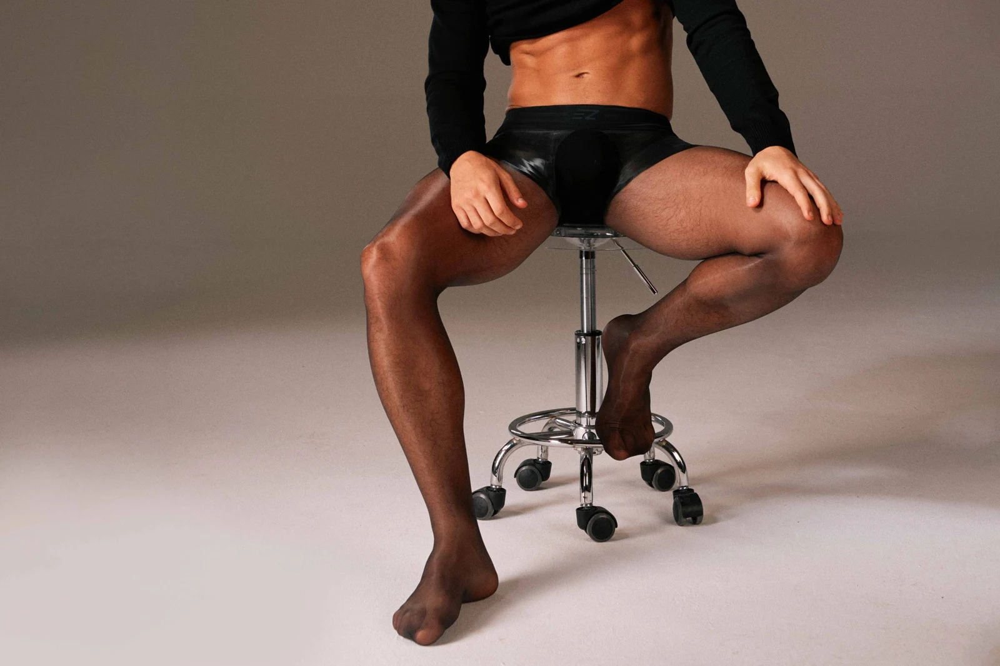

Практика · 3 мин чтения
Как прочитать карточку колготок и не потеряться в обещаниях
Состав, размер, DEN, конструкция и уход. Превращаем красивую фотографию в осмысленный выбор.
Продолжить с сохранённого места ↓
01
1. Что именно продаётся
Начните с типа изделия: колготки, чулки, гольфы, легинсы или модель без стопы. Затем уточните пояс, верхнюю часть, мысок и наличие ластовицы. Фотография показывает образ, но не всегда все технические зоны. У SPANX конструкция часто вынесена прямо в название; в каталоге Calzedonia первый уровень выбора разделяет основные типы чулочных изделий.
Сохранённая картинка без названия модели быстро теряет практическую пользу. Рядом полезно оставить источник: там можно проверить размерную сетку, цветовой код и рекомендации производителя. Ссылки в ТОНКО ведут именно к публикациям брендов, когда они установлены.
02
2–3. Из чего сделано и как выглядит
Процентный состав сообщает о волокнах. Полиамид и эластан выполняют разные роли, но одна доля эластана не предсказывает мягкость, срок службы или степень утяжки. Эти свойства зависят также от нити, вязки, конструкции и посадки. Если в карточке не хватает данных, точнее признать это, чем делать вывод по рекламному прилагательному.
DEN — ещё одна характеристика нити, а не готовая оценка изделия. Сравните прозрачность на общем плане, рассмотрите матовость или блеск и проверьте цвет. У Gabriella встречаются модели с эффектом прозрачности в зимней линейке Arctic: внешнее впечатление само по себе не сообщает ни состав, ни устройство слоёв.
03
4. Подходит ли размер
Размерные обозначения не универсальны. Пользуйтесь таблицей конкретного производителя и сравнивайте те параметры, которые в ней указаны. Рост, обхваты и особенности конструкции могут быть важнее привычной буквы на другой одежде. Не стоит выбирать заведомо маленький размер ради большего «эффекта».
На примерке обратите внимание на длину ноги, положение шаговой зоны, натяжение в колене и устойчивость пояса. Если изделие постоянно сползает, причина может быть в размере или несовпадении кроя с фигурой. Это не исправляется автоматически повышением DEN.
04
5. Как ухаживать и что подтверждено
Ищите инструкцию по стирке, сушке и надеванию. Затем отделите визуальное описание от обещаний эффекта. «Блестящие» можно оценить на фото; утверждение о здоровье, антицеллюлитном действии или лечебной компрессии требует совсем другого подтверждения. Фильтр интернет-магазина не является клиническим исследованием.
В мастерской выбора можно собрать собственные приоритеты, пройти короткую проверку знаний и оценить стоимость одной носки. Это ориентиры для сравнения, а не гарантия срока службы. Лучше выбрать несколько подходящих моделей по понятным критериям, чем искать одно рекламное слово, которое решит всё.
Проверить понимание
Какая информация лучше помогает выбрать размер?
На чём основан материал
- Calzedonia: категории и рекомендации ↗
- SPANX: конструкция и фильтры ↗
- Gabriella: ассортимент Arctic ↗
- NOQ: свойства и фильтры каталога ↗
Источники просмотрены 15 ноября 2026. Советы по чтению фотографий и сравнению — редакционный разбор; характеристики конкретных изделий проверяйте в карточке производителя.
Продолжение разбора
От идеи — к реальным примерам.
Последнее дополнение:
Пять строк перед покупкой
- Выпишите точную модель, состав и размерную таблицу. Не переносите размер автоматически с другой марки.
- Разделите проверяемые признаки и рекламные обещания: усиленный мысок — деталь конструкции, «не рвутся» — утверждение, требующее условий.
- Проверьте фотографии нужного оттенка, правила ухода и условия возврата. Сохраните вопросы, на которые карточка не отвечает.
Что добавилось по теме
Подборка пополняется готовыми русскими обзорами. Оригинальные даты и источники сохранены внутри материалов.

NYLO Journal
Колготки сползают: проверьте размер, посадку и пояс
В памятке NYLO нет обещания универсального решения для сползающего пояса. Вместо этого бренд предлагает последовательно проверить размер, высоту посадки и то, как распределена ткань после надевания.
Прочитать обзор на ТОНКО →Тематическая иллюстрация: Individual 10 · конструкция. Отдельная съёмка, не фотография события из статьи.

NYLO Journal
NYLO 120D и Glamory Microman 100: различия в посадке и размерах
NYLO сопоставляет свои плотные колготки 120D с мужской моделью Glamory Microman 100. В сравнении важны не только значения DEN, но и пояс, конструкция и доступные размеры.
Прочитать обзор на ТОНКО →Тематическая съёмка NYLO: Чёрный жакет и прозрачный слой. Это иллюстрация сочетания с одеждой, а не фотография всех моделей из обзора.

Bracatus
Шерстяные колготки: как искать мягкость, а не только процент шерсти
Надпись «с шерстью» ещё не объясняет, как колготки будут ощущаться на коже. В новом материале Bracatus обсуждаются свойства волокна, пряжи и готового полотна. Собрали основные различия и добавили понятный порядок выбора.
Прочитать обзор на ТОНКО →Oroblù Cheryl — пример смесовой модели: 65% модала и 8% кашемира по карточке бренда. Фото Oroblù; иллюстрация к теме состава и мягкости.